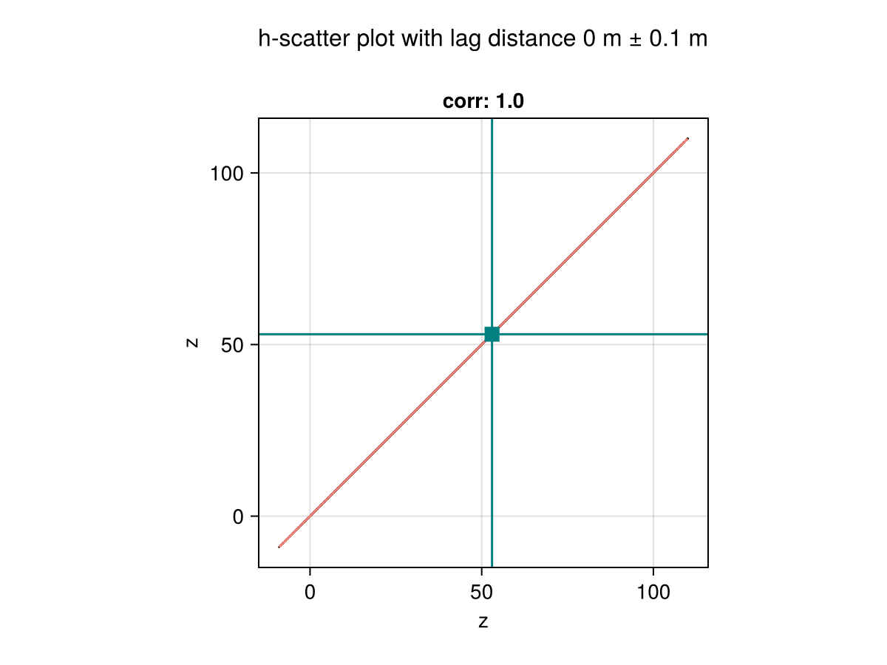
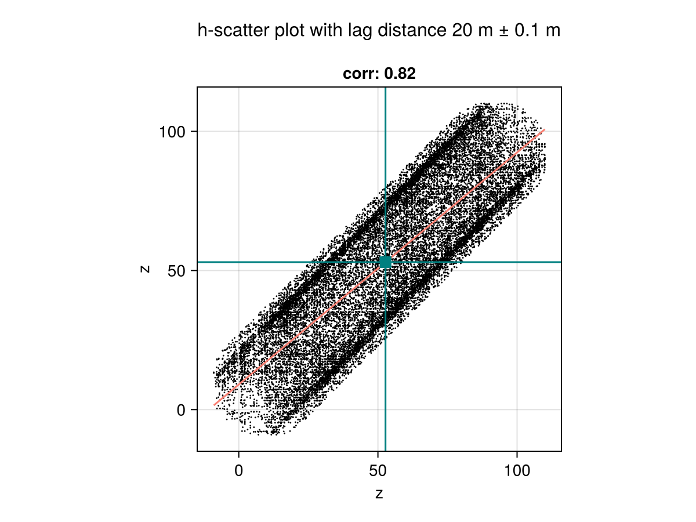
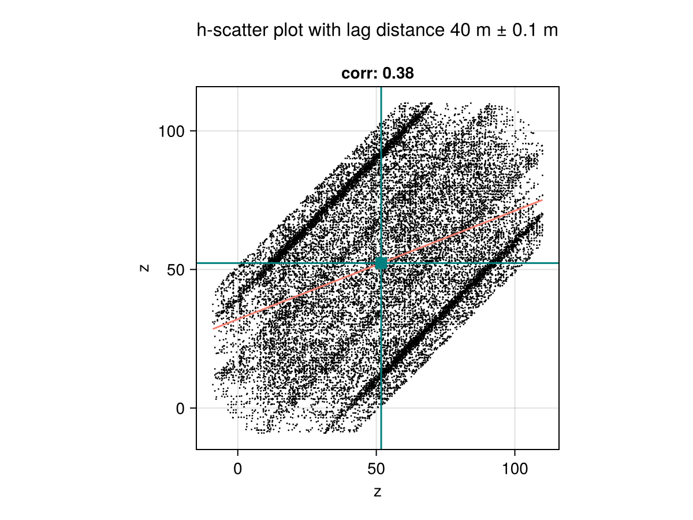

Visualization
Scientific visualization
The framework is integrated with the powerful Makie.jl ecosystem. The recipes documented below assume that a Makie backend is loaded in the same session.
Meshes.viz — Function
viz(object; [options])Visualize Meshes.jl object (e.g., mesh, geometry) with options such as color and alpha values for transparency. All available options will be documented below upon loading a Makie.jl backend.
Examples
Different coloring methods (vertex vs. element):
# vertex coloring (i.e. linear interpolation)
viz(mesh, color = 1:nvertices(mesh))
# element coloring (i.e. discrete colors)
viz(mesh, color = 1:nelements(mesh))Different strategies to show the boundary of geometries (showsegments vs. boundary):
# visualize boundary with showsegments
viz(polygon, showsegments = true)
# visualize boundary with separate call
viz(polygon)
viz!(boundary(polygon))Notes
This function will only work in the presence of a Makie.jl backend via package extensions in Julia v1.9 or later versions of the language.
Values passed to the color option can be of any type, as long as they can be converted to colors by the colorfy function from the Colorfy.jl package.
For Mesh subtypes, the length of the vector of colors determines if the colors should be assigned to vertices or to elements.
VizPlot type
The plot type alias for the viz function is Viz.
Attributes
alpha = 1.0 — scalar or vector of transparency values in [0, 1]
color = :slategray3 — scalar or vector of colors for geometries
colormap = :viridis — color scheme (a.k.a. map) from ColorSchemes.jl
colorrange = :extrema — minimum and maximum color values or symbol
pointcolor = :gray30 — color of points
pointmarker = :circle — marker of points
pointsize = 4 — size of points
segmentcolor = :gray30 — color of segments
segmentsize = 1.5 — width of segments
showpoints = false — visualize points
showsegments = false — visualize segments
Meshes.viz! — Function
viz!(object; [options])Visualize Meshes.jl object (e.g., mesh, geometry) in an existing scene with options forwarded to viz.
viz! is the mutating variant of plotting function viz. Check the docstring for viz for further information.
GeoTables.viewer — Function
viewer(geotable; kwargs...)Basic scientific viewer for geospatial table geotable.
Aesthetic options are forwarded via kwargs to the Meshes.viz recipe.
Notes
This function will only work in the presence of a Makie.jl backend via package extensions in Julia v1.9 or later versions of the language.
GeoTables.cbar — Function
cbar(fig[row, col], values; colormap=:viridis, colorrange=:extrema)Add a colorbar to fig[row, col] for the given values and options for the colorfy function from the Colorfy.jl package.
Notes
This function will only work in the presence of a Makie.jl backend via package extensions in Julia v1.9 or later versions of the language.
The viz and viz! recipes take a geospatial domain or a vector of geometries as input. The viewer takes a geotable as input and calls viz on all columns that can be converted to colors by the Colorfy.jl package. It also adds a color bar cbar with the same color scheme.
Statistical plots
Built-in
GeoStatsFunctions.hscatter — Function
hscatter(geotable, [vars]; [options])h-scatter plot for variables vars stored in the geotable. The variables can be specified by their names or indices, and all variables are plotted by default. Additional options are documented below.
Options
lag- lag distance in length units (default to0.0u"m")tol- tolerance for lag distance (default to0.1u"m")distance- distance from Distances.jl (default toEuclidean())nmax- maximum number of samples (default to4000)size- size of points (default to2)color- color of points (default to:black)alpha- transparency of points (default to1.0)rcolor- color of regression line (default to:salmon)ccolor- color of center lines (default to:teal)
Examples
# h-scatter of z vs. z at lag 1.0
hscatter(geotable, "z", lag=1.0)
# h-scatter of z vs. w at lag 2.0
hscatter(geotable, ["z", "w"], lag=2.0)
# h-scatter of first 4 variables
hscatter(geotable, 1:4)
# h-scatter of all variables
hscatter(geotable)Notes
This function will only work in the presence of a Makie.jl backend via package extensions in Julia v1.9 or later versions of the language.
data = georef((z=[10sin(i/10) + j for i in 1:100, j in 1:100],))
hscatter(data, "z", lag=0)
hscatter(data, "z", lag=20)
hscatter(data, "z", lag=40)
Other plots
The plots below can be very useful to explore the distribution of values in a geotable:
provides the pairplot function to explore multivariate continuous distributions.
is a very flexible alternative that supports grouped and faceted layouts based on categorical variables.
provides 2D and 3D statistical biplots for identifying main axes of variation.